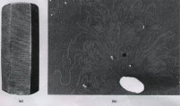
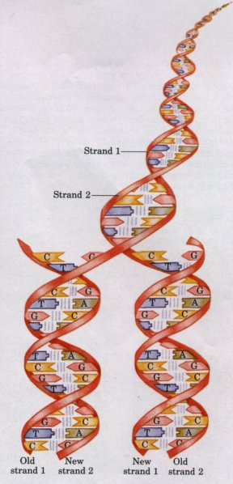
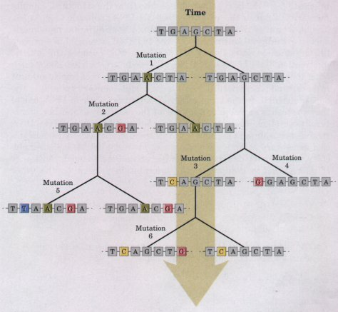

| The continued existence of a biological
species requires that its genetic information be
maintained in a stable form and, at the same time,
expressed with very few errors. Effective storage and
accurate expression of the genetic message defines
individual species, distinguishes them from one another,
and assures their continuity over successive generations. Among the seminal discoveries of twentieth-century biology are the chemical nature and the three-dimensional structure of the genetic material, DNA. The sequence of deoxyribonucleotides in this linear polymer encodes the instructions for forming all other cellular components and provides a template for the production of identical DNA molecules to be distributed to progeny when a cell divides. Genetic Continuity Is Vested in DNA MoleculesPerhaps the most remarkable of all the properties of living cells and organisms is their ability to reproduce themselves with nearly perfect fidelity for countless generations. This continuity of inherited traits implies constancy, over thousands or millions of years, in the structure of the molecules that contain the genetic information. Very few historical records of civilization, even those etched in copper or carved in stone, have survived for a thousand years (Fig. 1-15). But there is good evidence that the genetic instructions in living organisms have remained nearly unchanged over very much longer periods; many bacteria have nearly the same size, shape, and internal structure and contain the same kinds of precursor molecules and enzymes as those that lived a billion years ago. Hereditary information is preserved in DNA, a long, thin organic polymer so fragile that it will fragment from the shear forces arising in a solution that is stirred or pipetted. A human sperm or egg, carrying the accumulated hereditary information of millions of years of evolution, transmits these instructions in the form of DNA molecules, in which the linear sequence of covalently linked nucleotide subunits encodes the genetic message. |
 Figure 1-15 Two ancient scripts. (a) The Prism of Sennacherib, inscribed in about 700 s.c., describes in characters of the Assyrian language some historical events during the reign of King Sennacherib. The Prism contains about 20,000 characters, weighs about 50 kg, and has survived almost intact for about 2,700 years. (b) The single DNA molecule of the bacterium E. coli, seen leaking out of a disrupted cell, is hundreds of times longer than the cell itself and contains all of the encoded information necessary to specify the cell's structure and functions. The bacterial DNA contains about 10 million characters (nucleotides), weighs less than 10-10 g, and has undergone only relatively minor changes during the past several million years. The black spots and white specks are artifacts of the preparation. |
| The capacity of living cells to preserve
their genetic material and to duplicate it for the next
generation results from the structural complementarity
between the two halves of the DNA molecule (Fig. 1-16).
The basic unit of DNA is a linear polymer of four
different monomeric subunits, deoxyribonucleotides
(see Fig. 1-3), arranged in a precise linear sequence. It
is this linear sequence that encodes the genetic
information. Two of these polymeric strands are twisted
about each other to form the DNA double helix, in which
each monomeric subunit in one strand pairs specifically
with the complementary subunit in the opposite strand. In
the enzymatic replication or repair of DNA, one of the
two strands serves as a template for the assembly of
another, structurally complementary DNA strand. Before a
cell divides, the two DNA strands separate and each
serves as a template for the synthesis of a complementary
strand, generating two identical double-helical
molecules, one for each daughter cell. If one strand is
damaged, continuity of information is assured by the
information present on the other strand. Genetic information is encoded in the linear sequence of four kinds of subunits of DNA. The double-helical DNA molecule contains an internal template for its own replication and repair. |
 Figure 1-16 The complementary structure of double-stranded DNA accounts for its accurate replication. DNA is a linear polymer of four subunits, the deoxyribonucleotides deoxyadenylate (A), deoxyguanylate (G), deoxycytidylate (C), and deoxythymidylate (T), joined covalently. Each nucleotide has the intrinsic ability, due to its precise three-dimensional structure, to associate very specifically but noncovalently with one other nucleotide: A always associates with its complement T, and G with its complement C. In the doublestranded DNA molecule, the sequence of nucleotides in one strand is complementary to the sequence in the other; wherever G occurs in strand 1, C occurs in strand 2; wherever A occurs in strand 1, T occurs in strand 2. The two strands of the DNA, held together by a large number of hydrogen bonds (represented here by vertical blue lines) between the pairs of complementary nucleotides, twist about each other to form the DNA double helix. In DNA replication, prior to cell division, the two strands of the original DNA separate and two new strands are synthesized, each with a sequence complementary to one of the original strands. The result is two double-helical DNA molecules, each identical to the original DNA. |
Despite the near-perfect fidelity of genetic replication, infrequent, unrepaired mistakes in the replication process produce changes in the nucleotide sequence of DNA, representing a genetic mutation (Fig. 1-17). Incorrectly repaired damage to one of the DNA strands has the same effect. Mutations can change the instructions for producing cellular components. Many mutations are deleterious or even lethal to the organism; they may, for example, cause the synthesis of a defective enzyme that is not able to catalyze an essential metabolic reaction.
| Occasionally the mutation better equips
an organism or cell to survive in its environment. The
mutant enzyme might, for example, have acquired a
slightly different specificity, so that it is now able to
use as a reactant some compound that the cell was
previously unable to metabolize. If a population of cells
were to find itself in an environment where that compound
was the only available source of fuel, the mutant cell
would have an advantage over the other, unmutated
(wild-type) cells in the population. The mutant cell and
its progeny would survive in the new environment, whereas
wild-type cells would starve and be eliminated. Chance genetic variations in individuals in a population, combined with natural selection (survival of the fittest individuals in a challenging or changing environment), have resulted in the evolution of an enormous variety of organisms, each adapted to life in a particular ecological niche. |
 Figure 1-17 The gradual accumulation of mutations over long periods of time results in new biological species, each with a unique DNA sequence. At top is shown a short segment of a gene in a hypothetical progenitor organism. With the passage of time, changes in nucleotide sequence (mutations, indicated here by colored boxes) occur, one at a time, resulting in progeny with different DNA sequences. These mutant progeny themselves undergo occasional mutations, yielding their own progeny differing by two or more nucleotides from the original sequence. |